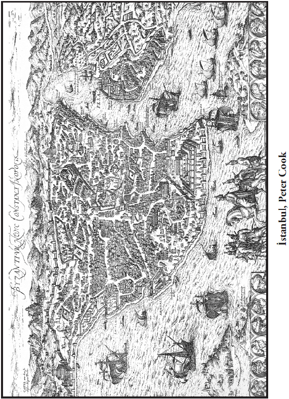

Milletlerin ortak hafızası, tarih dediğimiz zaman kesiti içinde oluşur. Bizim dışımızda gibi görünen birtakım olaylar, savaşlar, istilalar, göçler kimliğimizin oluşumunda son derece müessirdir.
Bu mülahazalarla baktığımızda gerçek bir kimlik bilincine ulaşabilmek için, kimliğin vazgeçilmez unsuru olan tarihi iyi bilmemiz gerektiğini görüyoruz. Nitekim son yıllarda tarihe ve tarih kitaplarına bir süre öncesine nispetle daha yoğun bir ilgi gözleniyor. Tarihî olaylara, tarihe bigâne kalınamayacağını görüyoruz. Bilmesek ve dikkate almasak da tarih kendisini bize dayatıyor.
Bu kitap, çeşitli vesilelerle yaptığım konuşmaların gözden geçirilerek kitap haline getirilme projelerinden biridir. Osmanlı’nın klasik dönemi ve modernleşme sürecinden bazı sahnelerin yanı sıra Haçlı Seferleri, Katolik-Ortodoks kiliselerinin ayrım noktaları gibi farklı konulardan bahsettiğimiz kitabın, gelecekte daha kapsamlı analizlere kapı aralamasını ümit ediyorum.
İlber Ortaylı
Mayıs 2008
Sık sık söz ettiğimiz bir kavram vardır: Tarih bilinci. Tarih bilinci, kuşkusuz tarif edilmesi gereken bir kavramdır. Ne var ki sosyal bilimlerin metodolojisinde tarifler doğa bilimlerinde olduğu kadar herkesçe kabul edilir bir nitelik göstermez.
Ferdin tarih bilinci edinmesinde onun tecrübeleri, dünya görüşünü ve yaşam tarzını şekillendiren olaylar, ailesi, mensup olduğu toplumsal sınıf, ekonomik durumu tayin edicidir. Bunlara göre kişide bir bilinç oluşabilir. Toplumların tarih bilincinde ise, durum bu kadar net değildir. Zira toplum her şeyden evvel, uzun bir zamanın ürünü olarak ortaya çıkar; bu uzun zaman içinde bir içtimaî düşünceye ve bilince ulaşılır ki bu kollektif (mâşerî) bir bilinçtir. Kollektif bilinç ise, toplumun etrafında birleştiği değerler bütününü ifade eder. Elbette ki toplum dediğimiz şey, bütünüyle bir noktada buluşmaz, kendi içinde farklılıkları da barındırır. Ancak hiç şüphesiz asgarî bir birleşmeden bahsedilebilir. Nihayette şunu diyebiliriz; toplumsal bilinci şekillendiren en önemli unsur, geçmiştir.
İnsan için genel bir tanım yaparsak, kendisine; “tarih bilincine sahip varlık” diyebiliriz. Geçmişini bilen, merak eden, yanlış da olsa bilmeye çalışan, gelecek endişesi olan, geleceğe dönük bazı tahminler yapan tek varlık insandır. Bu bakımdan, insanı tarih bilgisinden ve tarih bilincinden soyutlayamayız. Toplum için de tarih bilinci çok önemlidir. Şüphesiz bir toplumu, bir etnik grubu, ulusu oluşturan unsurların başında dil, din ve toprak parçası gelir. Bu üç unsurun zaman içinde iç içe geçmesi, iç içe geçişte yaşanan süreç, tarihi oluşturur. Hangi dili konuşacağız? O dil nasıl istihaleler geçirir? Bir tarihi, uzunca bir zamanı bir arada yaşayarak dilimizi kurarız. Toplumlar nihayette insanlardan oluşur, insanlar da sonuçta ortak paydalarda benzeşirler. Ama görüyoruz ki, toplumlar birbirlerinden farklıdırlar; aynı dili konuşmazlar. İşte bu farkı doğuran şey, tarihtir.
Niçin şu grup bu dine mensuptur da, öbürü değildir? Türkler üzerinde bunu görmek mümkündür. Belki çok insanın dikkatinden kaçıyor; Türkler arasında üç büyük dine mensup insan vardır. Mesela Karaylar, (çoğumuz ‘Karayiler’ diyoruz) gerçi Yahudi dinindedirler; ama bunlar, Tevrat’a inanan, Talmut’u reddeden bir mezheptir. Fakat diğer Yahudiler gibi Hem Tevrat’ı, hem Talmut’u kabul eden bir Türk grup da vardır. Kırım adasında onlara Kırımçaklar denir. Bunlar Alman işgalinden sonra, kıyıma uğramış bir zümredir. Yine Romanya, Ukrayna, Moldavya ve Bulgaristan’da da uzantıları bulunan Gagavuz Türkleri Ortodoks Hıristiyanlardır.
Bir kavmin böyle üç ayrı din grubuna sahip olması da, tarihin kurduğu bir şeydir. Demek ki tarih dediğimiz zaman kesitinde, coğrafyada olaylar meydana gelir; milletlerin ortak hafızası ve bilinci de bunun içinde oluşur. Oluşan şey kimliğimizdir. Kimlik; bizim dışımızda gibi görünen birtakım olayların, savaşların, istilaların, göçlerin içinde oluşan ortaklıklardır; dil ve din gibi şeylerdir.
Tarihe müdahale etmek
Modern zamanlarda toplumlar, geleceklerine belirgin ölçüde yön verme eğiliminde olmuşlardır. Artık bilinçli olarak, yaşam biçimimizi ve tarihin bize sunduğunu değiştirmeye çalışıyoruz. Özellikle kimlikte bu çok önemlidir. Bu sebeple kimliğin en önemli parçası, en vazgeçilmez unsuru olan tarihi iyi bilmemiz gerekiyor. Tarih bilgisi ve bunun getireceği bilinç, bir toplum için çok önemlidir. Uygar milletler, özellikle XVIII. asırdan itibaren tarih eğitimine son derece önem vermişlerdir. Hatta Osmanlı uyruklu kavimler, mesela Bulgarlar XIX. yüzyıldaki ilk gazetelerinde dahi millî tarih ve coğrafyaya sütunlar ayırmışlardı. (İzmir’de çıkan Lyboslovje) Oysa Türkiye’de bu, ancak son asırda anlaşılmıştır. Modern ulusları oluşturan bu bilginin üzerinde yeterince durulamadığını, tarih bilincimizin henüz inşa halinde olduğunu kabul etmeliyiz. Bu inşa safhasında da birtakım zıt görüşler ortaya çıkmıştır. Bunları gayriilmî olarak vasıflandırmak mümkündür. Bu yorumlar ve bilgiler, irrasyoneldir.
Bir örnek üzerinde duralım. Mesela bizdeki bir tarih yorumu şudur: “Türkiye, Cumhuriyet’in ürünüdür. Türk ulusu, yeni bir devlet, yeni bir vatan kurmuştur. Sonuç olarak bizim tarihimiz, Cumhuriyet’in kuruluşuyla başlar.” Oysa böylesi kısa bir tarihsel süreç, kompleks bir geçmişi olan Türk milletinin tarihini kuşatamaz. Bu açıklama, tarihsel ve toplumsal kimliğimizin/bilincimizin oluşumunu izah edemez. Bu olsa olsa, ancak tarihimizin son safhası olabilir. Cumhuriyet’in kuruluşuyla birlikte yeni bir tarihî sürecin içine girdiğimiz bir gerçektir, ama biz bu tarihten ibaret değiliz. 700 yıllık Osmanlı tarihini görmezlikten gelemeyiz, çünkü Türk halkını oluşturan, bu tarihtir. Üstelik bu, sadece Türk halkının değil, sınırlarımız dışında kalan Türk etnik gruplarının da tarihidir.
Bizim milliyetçiliğimiz nasıl bir şeydir? Türk ulusçuluğu, mekteplerde öğretilen ve öğrenilebilen bir şey midir, yoksa yaşanan olaylarla, felaketlerle ve kıvançlarla elde edilen bir durum mudur? Bugünkü vatanperverliğimiz nereden doğmaktadır? Bu soruların cevabını vermek gerekir.
Çok açıktır: Milliyetçiliğimiz ve vatanperverliğimiz, Çanakka-le’de yurtlarını savunmak için o muazzam şehitliği dolduran muhterem insanların kanlarıyla oluştu. Pek çok ülkede böyle bir şuur görülmez. Bizim Çanakkalemiz vardır. Her ülkenin tarihinde böyle zaferler yoktur. Yurtseverliğimiz ve ulus bilincimiz; 1453 İstanbul’un Fethi, 1473 Otlukbeli Savaşı, 1517 Mercidabık, Ridaniye, 1526 Mohaç ile mi oluşuyor? Evet… Aynı şekilde 1699’daki Karlofça Antlaşması, 1774-1783’te Karadeniz’in kuzeyinin kaybı ve anavatana muhacir kitlelerinin sızmaya başlaması, 93 Harbi (1877-1878) gibi felaketler de milliyetçiliğimizin unsurlarını oluşturuyor.
Bize Rumeli’yi kaybettiren Balkan Harbi, tarihimizde bir kilometre taşıdır; tarih bilincimizi, milliyetçiliğimizi belirleyen bir olaydır. Bu kaybın sonrasında gelen muhacirler bugün Türkiye’deki nüfusun en az dörtte birini oluşturuyorlar. Günümüzde de bu savaşın, bu yıkımın kalıntıları varlıklarını sürdürüyor. Balkanlar’daki Türk etnik grubu, oradaki devletler için hâlâ bir problemdir. Bu grubun etrafla uyumu sağlanmadığı sürece, orada gerçek anlamda bir barış tesis edilemez. Bunu böyle görmek gerekiyor. Sonuçta tarihî olaylar, tarih bilinci göz ardı edilemiyor. İnsan; “Beni ilgilendirmez, ben bunu hafızamdan sildim” diyemiyor. Tarih, zamanın her diliminde insanın önüne çıkıyor, bir tortu olarak kalıyor. Çocukluğunuzda geçirdiğiniz bir hastalık, nasıl sizinle birlikte yaşarsa, tarih de toplumların hayatı için böyledir.
Tarihî olaylara, bütün bir tarihe bigâne kalamayız. Tarih, karşısında nötr kalabileceğimiz bir şey değildir, dikkate almak zorunda olduğumuz bir şeydir. Öğrenmezsek, bilmezsek ve dikkate almazsak da o tarih kendisini bize dayatır, hatırlatır. İşte biz bugün bunu yaşıyoruz. Bu yüzden, tarih bilinci, mutlaka, ama mutlaka sahip olunması gereken bir şeydir.
Osmanlı Devleti’nin kuruluşu özel bir öneme sahiptir. Bir kurmacaya yaslanmaz, akitlerle ve sözleşmelerle oluşmuş değildir. 29 Ekim 1923’te ilan edilmiş Cumhuriyet’in kuruluşuna benzemez. Yirminci yüzyıldaki devletlerin kuruluşu biraz da ihtilal şartlarında oluşmuştur. Yani devletler, ihtilal ve devrimlerle oluşmuşlardır; yaşananların tümü bir projenin pratiğe taşınmasıdır.
Elimizdeki bilgilere göre tam bir hukukî, siyasî tarihle karşı karşıya değiliz. Çünkü asrımızdaki devletler, mesela 14 Temmuz 1789 ihtilal günü ilan edilir ve ihtilali yapanlar devletlerin sınırlarını o gün öyle çizmişlerdir. 1948 yılının filanca gününde İsrail Devleti ilan edilir; bizim Cumhuriyetimiz ise 29 Ekim 1923’te. Yani devletler günümüzde bir akit gibi ortaya çıkar. Batıdaki devletlerin kuruluşu isimli cisimlidir. Ortaçağlarda ise devletlerin kuruluşu farazîdir, isimler sonradan verilmiştir.
Osmanlı İmparatorluğu’nun kuruluşu da -ki son büyük imparatorluktur, bu havalide yalnız Türklerin değil, bütün Akdeniz’in son geleneksel imparatorluğudur- sonradan bir tarih seçilmesiyle ortaya konmuştur. Bu bakımdan 1-2 yıl oynayabilir. Mühim olan bu değildir. Yine Osmanlı’yı kuranlar imparatorluk adını kullanmış değildir. O dönemin gazilerine “Büyük imparatorluk olacağınızı biliyor musunuz?” diye sorsanız, bilmem ne derlerdi.
Bu tarih, bir imparatorluğun tarihi olarak yeniden değerlendirilmiştir. Ne zaman? 15. asırda, özellikle II. Murat ve bilhassa Fatih Sultan Mehmet zamanlarında; çünkü o devlet artık imparatorluk olmuştur. Fatih’in imparatorluğu, Bosna’dan Doğu Anadolu’ya kadar uzanmakta, Deşt-i Kıpçak ve Ukrayna ovalarına kadar Kırım’ı içermekte; güneye, Suriye sınırına dayanmaktadır. Ondan sonraki 50 yılın içerisinde bu sınır, ikiye katlanır. Bu durumda biz, 700. yılda bir devletin kuruluşunu biraz farazî bir tarihle kutladık; fakat bu mühim değil; önemli olan, bir tarihi abidenin ortaya çıkışı.
Türkiye maalesef tarihçi bir ülke değildir. Tarihî bir ülkedir, tarihi yapan uluslardan biridir, ama tarih bilimine gerekli özeni göstermiş bir ülke değildir. Tarih yapmak kavramı ile ne kastediyoruz? Bazı yorumlar vardır; “Tarihi biz yaptık, tufanlardan önce vardık, tufanlardan sonra da varız” der. Bazıları da “Tarihe ciddi bir etkimiz olmamış, göçebeyiz, yağmacıyız” der. Şurası bir gerçektir ki, bu iki görüş de abartılıdır. Mesela Lüksemburglular, asla “Tarihi biz yaptık, şöyle yaptık, böyle yaptık” diye konuşmazlar. Ama Balkanlar’da genellikle böyle söyleyenler vardır. Romenlere sorsanız, onlar yapmışlardır tarihi; Bulgarlara sorsanız, zaten Şarlman’dan sonra Avrupa’nın en büyük imparatorluğu onlardır. Keza Yunanlılar aynı abartmayı yapmaktadır. Oysa biz tarih yapmak derken böyle bir bakıştan söz etmiyoruz.
Türkler gerçekten tarih yapımında müessirdirler; şuradan belli ki, bu bölgedeki hiçbir kavmin tarihini Türklersiz incelemek mümkün değildir. Bu söylediğimiz, elbette ki Mayalar’ın, Aztekler’in, modern Amerika’nın, Afrika’nın veya Hindiçin’deki devletlerin tarihini içermez. Fakat Eski Dünya’daki; yani Akdeniz çevresi, Avrupa, özellikle Doğu Avrupa ve “Asya-i vusta” dediğimiz Orta Asya’ya doğru uzanan devletlerin ve milletlerin tarihi Türklere değinilmeden incelenmez. Hatta ciddi tarihçi çevrelerde, “Türkçe öğrenilmeden tarih yapılmaz” denir. Meşhur bir sözdür; “Balkanizm boş bir bilimdir, meğerki Türkçe öğrenesiniz” denir. Türkçe bilmekse, Osmanlıca belgeleri okuyabilmek demektir. Belge okuyamayan Türkçe biliyor kabul edilmez. Bilim âleminin gözünde Türkçe biliyor sayılmanız için belgeleri okuyabilmeniz gerekir.
Eskiden tarih, antropoloji, uluslararası ilişkiler gibi dallarda doçent olmak için Osmanlıca imtihanından geçilirdi. Aslında o zaman dahi bu, yönetmelikte kalan bir hükümdü; benim imtihana girdiğim zaman bu hüküm yürütülmüyordu. Korkarım böyle giderse, 20 sene sonra tarih dalında dahi adayları imtihan mümkün olmayacak.
Ne yazık ki Türkiye’deki sosyal bilimcilerin 70-80 sene önceki metinleri okumamak, bunlarla ilgilenmemek konusunda büyük bir ısrarı var. Oysa bir tarihçi Osmanlıca okuyamadığı müddetçe heveskâr tarihçi olarak kalacaktır. Aynı şey diğer coğrafyalar için de geçerlidir. Latince bilmeden Macar tarihi çalışılmaz mesela. Herkes bilir ki 1848’e kadar Macar Krallığı’nın tüm mensupları, kançılaryası, memurları Latince kullanırdı. Ya da Orta Yunancayı bilmeden Bizans tarihçisi olunamaz. Bu anlamda ülkemizde ciddi bir filoloji uzmanlığı eksikliği var. Bu tür eleştiriler Batı tarihçileri arasında normal karşılanırken, bizim ülkemizde eleştiriler karşısında hazımsızlık gösteriliyor. Oysa tarih bilimi, filolojiyle yapılır.
Filoloji bakımdan kuvvetli olmayan bir kavim, Batı medeniyetine girmiş değildir. Batı medeniyetini diğer medeniyet çevrelerinden tefrik eden iki vasıf vardır: Bunlardan bir tanesi filoloji, diğeri musikidir. Doğu’da bugünkü Batı medeniyetinin, Batı musikisinin izlerine rastlanmaz, yani Yunan’da, hatta Roma’da, hele Bizans’ta, İran’da, Mısır’da bu izlere rastlanmaz. O başka bir müziktir. Onun devamı bugünkü Türklerin alaturka musikisiydi ama XX. yüzyılda dejenere edildi. Söylediğimiz gibi Batı medeniyetin diğer ayırt edici vasfı filolojidir. Batılılar ciddi bir filoloji bilgisine sahiptirler. Aslında eski dilleri öğrenmek tarihte sırf Avrupalılara has bir şey değildi. Mesela Kalde Krallığı’nda, Babilonya’da Sümer metinleri saklanırdı, çok ayrı bir dil olmasına rağmen Hitit memurları ve rahibleri Sümer metinlerini okuyabilirdi. Yine Güneydoğu’daki birtakım prensliklerin arşivleri kazılıyor; oradan da Hitit metinleri değil, Sümer metinleri çıkıyor. Sümer dili, tamamıyla ayrı bir dil, Sami dillerden biri bile değil ama o dönem insanı Gılgameş’i okuyormuş. Ya da İslam Orta Çağı’nda büyük İslam âlimlerinin çoğu İbranca ve Aramca bilirdi. Mesela ünlü hadis âlimi Buhari, İbranca bilirdi ki İsrailiyat’ı bu sayede tefrik edebilirdi.
Yine de tam manasıyla filoloji yapanlar, Batılılardır. Bunun çok uç örnekleri vardır. XVII. asırda 14 yaşında iki Fransız çocuk, hayatta Türkiye’ye gelmemelerine rağmen Türkçe öğreniyorlar. Gene XIV. Louis devrinin bilim adamlarından biri, Çin metinlerini okuyup içinden Türklerle ilgili bölümleri çıkarıyor. Bir Fransız, Sinoloji çalışıyor, Türklerle ilgili bölümleri ayırıyor; bizse onun yaptığı neşriyatı Hüseyin Cahit tercümesi sayesinde öğreniyoruz. Tarihî komşumuzun bizim hakkımızda yazdıklarını tetkik etmek çabamız yok.
Gene mesela Arabica, Persica diye Hafız’ı, Sadi’yi tercüme ediyorlar. Hatta Friedrich Ruckert, İran şairlerini çevirmekle de kalmıyor, çevirisini Almancada aruz vezni kullanarak yapıyor. Oysa Doğu’da hiç kimsenin oturup Titus Livius’u, Vergilius’u, Homeros’u vs çevirdiği yok. Ta ki Tanzimat dönemi geliyor, Fransızca üzerinden tercüme ediliyor bu metinler.
Kur’an-ı Kerim’in, artistik nesir, seciyeli nesir dediğimiz bir stili vardır. Çevirilerde işte bu stili yakalıyorlar. Türklerin Kur’an tercümesi ise sadece bir tercümedir; ilmî bakımdan doğrudur ama oradaki stil, oradaki lezzet yakalanmış değildir, öyle bir gayret de yoktur. Halbuki Almanınkinde vardır, yani Ruckert okuduğunuz zaman, onun Kur’an tercümesinde böyle bir lezzeti yakalarsınız.
Bir devir ve bir medeniyet düşününüz ki, bir yanda Schubert’ler, Beethoven’lar, bir yanda Ruckert’ler… Ve bütün bunlara eşlik eden felsefî birikim. Mesela Hegel “Hiç kimsenin Osmanlı tarihini yazdığı yoktu” diyor, bunu dert ediyor. Goethe’nin Hafız’dan etkilendiğini, Hafız’ın Hammer sayesinde çevrildiğini, Doğu’nun rüzgârlarının geldiğini ve bu sayede Goethe’nin de büyük “West-Östlicher Diwan”ı (Doğu-Batı Divanı’nı) yazdığını söylüyor. Hadi Hegel’in ilgilenmesini bir dereceye kadar olağan karşılayalım. Engels, daha da ilgincini söylüyor: “Hammer denen Alaman, -tabir bu- çıkıp da Osmanlı tarihini yazana kadar bizim diplomatların haberi bile yoktu o medeniyetten, bize bir şey vermediler.” Yani XVIII. asırda başlayan faaliyete boşuna “aydınlanma” denmemiş, dünya hakkında ciddi bir bilgi birikimi var.
Türkiye’de maalesef böyle bir faaliyet yok. Gerçi Türkiye, yakın zamanlarda tıpta ve mühendislikte büyük işler başardı, daha da başaracak. Ordular daima kendini reforme ediyor, başarılı oluyor, eğitim verebiliyor. “Managerial class”, bütün hatalarına rağmen birtakım şeyleri başarabiliyor. Bunlar önemli, ama temel noktalarda bir duraklama var. O temel noktalarda duraklama olunca toplumun kendisini tanıması, gereken siyasî reformları yapması, kendini iyi değerlendirmesi mümkün olamıyor.
İyi diplomatlarımız var, fakat bu diplomatların kültürel ilişkiler sahasında fazla yaratıcı olabilmeleri mümkün değil; çünkü İspanya diktatörü Franko’nun diplomatları gibi değiller. “Efendim, biz kendimizi tanıtmalıyız” diyorlar. Çok güzel, peki devamı nerde? Franko’nun diplomatları örneğine bir bakalım. Bilhassa 1945’ten sonraki dünyada Franko İspanyası istenmeyen ülke idi. Nazi Almanyası’nın ve Faşist İtalya’nın müttefiki olmuştu, fazla bir geliri de yoktu ve tek parti rejimini değiştirme niyetini taşımıyordu. Ülkelerinin diplomatik etkinliğini artırmak isteyen İspanyol diplomatlar kültür işlerine yöneldiler. Görüldü ki İspanyol diplomat sınıfının böyle bir kültürü var. Maalesef bizim kadrolarımızda bu tür uğraşlar yoktur.
Tekrar tekrar söylemek gerekir ki tarih bilgimiz çok zayıf. Mesela Musul konusu ileri sürülüyor ve deniyor ki, “Bizim Musul’da çok yüksek haklarımız var.” Bunu söyleyenler ne tür hakları olduğunun farkında bile değiller. Mesela “havass-ı hümayun” dediğimiz imparatorluk hasları vardır. Padişahın özel mülkü görünen şeylerdir bunlar. Onların statüsünü etüt etmeden, ne olduğunu bilmeden kulaktan dolma sözlerle konuşuyoruz.
Ermeni meselesi ve arşivlerin açılması
Yine sürekli konuştuğumuz bir mevzu: Ermeni meselesi ve arşivlerin açılması. Bu konuda söz söyleyenlerin tamamına yakını “arşiv”in ne olduğunu bilmiyor. Bir kez dahi arşive gidip orada ne gibi tasnifler var, o tasniflerden nasıl belge çıkar, belgelerin içindeki bilgiler neyi nasıl ifade eder, ne nasıl değerlendirilir, Osmanlı bir belgeyi XVII. asırda nasıl yazar, XVIII. asırda nasıl yazar bilmeden feveran ediyorlar: “Arşivleri kapalı tutuyorlar!”
Daha ilginci, bunu söyleyenler, yabancı arşivler üzerinde çalışmayı da bilmiyorlar, yani belgelerin muhtevasını senkronize okumak gibi bir vasıfları yok. Zaten bu konudaki külliyatın çoğu propaganda mahiyetli. İki tarafta da ezbere davranıyor, üslup olarak problemi anlayanı yok. “Holokost” benzeri bir jenositten bahsediliyor. Oysa ne bu taraf biliyor holokost’u, ne diğer taraf. Bilgiden uzak düşülünce bir tarafın suçlaması ve öbür tarafın savunması üzerine kurulu yaramaz bir tartışma içinde buluyoruz kendimizi. Bu sözler, ciddi heyetler önünde geçerliliği olan ifadeler değil.
Şöyle de ilginç bir şey oluyor: Ecnebi çevrelerden birisi, hakikaten Ermeni jenosidini savunmak için arşive giriyor; bir müddet sonra bakıyor ki mesele pek öyle değil, bunun holokost’a benzer yanı yok; o andan itibaren Türk tezini savunmaya başlıyor Mattei ve Roshenberg bunun örneği. Bundan sonra söylentiler çıkıyor; “Efendim, Türkler para verdi.” Türklerin para verdikleri falan yok. Çünkü Türklerin bu adamlardan haberleri bile yok. Çok hazin bir gerçek: Türkiye tarihinin teknik olarak yazımını, birtakım tezlerin teknik tenkidini yapanlar ecnebiler, yani tarih eğitimlerini, tarihe bakış alışkanlıklarını tamamıyla bu çevrenin dışında edinmiş insanlar. Bunun üzerinde durulması gerekiyor.
Ansiklopediye bakmayı, herhangi bir konu için ansiklopedi maddelerini aramayı bile bilmiyoruz. Tabii, şunu da söyleyelim: Türkiye’de İnönü Ansiklopedisi ve İslam Ansiklopedisi dışında gerçek anlamda ansiklopedi de yoktur. Çoğu çok hızlı çevrilmiştir, telif edilirken vahim hatalar yapılmıştır. Dolayısıyla ansiklopedilere bakarak tez ileri süremezsiniz, bizdeki ansiklopedileri daimî surette yabancı ansiklopedilerle karşılaştırmalı okuyacaksınız. Larousse’a bakacaksınız, Britannica’ya bakacaksınız, Brockhaus’a bakacaksınız. Pozitif bilimlerin konusu olan bir madde değil ise, bilhassa sosyal ilimler sahalarında, tercüme ansiklopedilerde en azından terminoloji tercümelerinde sakatlıklar vardır.
Türkiye’de aristokrasi var mıdır?
Şimdi toplumda bir asalet merakı çıktı. İnsanlar boyuna bize şecere soruyorlar. Mesela bir hanım geliyor, “Benim soyum İkinci Yakup’a dayanıyormuş, bunu araştırmak zorundayım” diyor. Ama en azından bir Osmanlı tarih kitabını alıp okuma alışkanlığı yok. Türkiye’de size, Almanya’daki, Fransa’daki, Macaristan’daki gibi şecere veremeyiz; çünkü bizde böyle bir imkân yok. Belirli nüfus kayıtları olabilir; ama çoğu ya kayıptır, ya yanmıştır, ya da yangın geçirmiştir. “Efendim, bizim şeceremiz falanca paşadan geliyor” diyorlar. Falanca paşa dediğinizin şeceresinin nereden, nasıl geldiği belli değil. Çoğunlukla şöyle olur: Adam, bir paşa kızıyla evlenmiştir, kadın öldükten sonra o efendi alıp şecereyi başka biriyle evleniyor, çok oluyor bu. Paşayla alakası olmayan bir neseb, o paşanın füruu olduğunu sanıyor. Gidiyor, vakfiyeden kaydını düşürüyor, o isimler etrafta geziyor vs.
Bunlardan gerçek bir usul-füru ilişkisi çıkaramazsınız, yani Türkiye’de bir aristokrasi bulamazsınız. Hele bu aristokrasiyi tasdik edecek, meşrulaştıracak bir kayıt sistemi suret-i katiyede mevzubahis değildir; çünkü Türkiye’de böyle bir kurum yoktur.
Bu söylentilerin neticelerini görüyoruz. Boyuna herkes “sabetayist” oluyor. Ne sabetayist olduğu iddia edilen aksini ispat edebilecek durumda, ne de iddia eden her zaman söylediğini delillendirecek durumda. Bu arada yanlışlıklar da yapılıyor. Yöntem hatasını göstermek bakımından örnek veriyorum, bir devlet adamı için böyle dediler mesela. Oysa bu mümkün olamaz; çünkü o bakanın annesi Almandı, von Papen’in sekreteriydi, ondan evvel de Ribbentrop kabinesinde sekreterdi. Üçüncü Reich’ta bu tür vazifelere kabul edilen küçük memurlarda dahi 5 göbek değil, 11 göbek araştırılır. Alman kayıt sistemi, bürokrasinin nüfus kayıtları bunu temin edecek durumdadır.
Avrupa’da bu kayıtların arkasında, her şeyden evvel, kiliselerdeki vaftiz defterleri, nikâh defterleri, ölüm defterleri vardır. Bir müddet sonra belediye teşkilatlarının erkenden kurulması dolayısıyla belediyelerdeki vergi defterleri vardır, ki bunlar birçok şeyi açığa çıkarır. Aristokratlardan farksız bir şekilde, köylüler de 10-15 kuşak geriye kadar gidiyorlar, “serf” dedelerine kadar şecerelerini çıkarabiliyorlar; bütün bunlar mümkün. Böyle bir ortamın içerisinde tarih, kayıt sistemleri itibarıyla başka türlü yapılıyor; onu arz etmek istiyorum.
Aradaki farkı teslim etmek lazımdır. Bu dediğim sistem, sırf bu toplumun Müslümanları için değil, Hıristiyanları ve Musevileri için de geçerlidir. Burada söz konusu olan, dine bağlı bir şey değil, bir geleneksel yapıdır. Bugün hahambaşılığa gidip İstanbul’un önde gelen Yahudi ailelerinin şecerelerini çok sıhhatle ve derinlemesine tespit etmeniz mümkün değildir; ancak sözlü gelenekle tespit edilir. Türkiye’de filolojik yanı şiddetle tamamlamak lazımdır, ama bunlar yok diye tarih yapılamaz da değildir. Hiç kaçarı yok, yüklü bir filolojik malumatınız olacak ve okuyacaksınız.
Tarih nasıl yazılır?
“Tarih nasıl yazılır?” dediğiniz zaman söylenen genelde şudur: “Efendim, kroniklerimiz vardır”, yani Osmanlı’daki “vakayiname”ler vardır, bu kronikleri okursunuz, eğrisiyle doğrusuyla tarihin ana hatları buradan çıkar. İkincisi, vergi defterlerine bakarsınız. Mahkeme kayıtlarına bakarsınız, toprak kayıtlarına bakarsınız, bu böyle gider. Nihayet denir ki: “Mektuplara bakarsınız.” Bu şekilde “histoire de mentalité” yapıyorlar, yani zihniyet tarihini birtakım tarihlemelerle, mektuplarla yapıyorlar. Böyle bir şey maalesef bizde tam manasıyla söz konusu değildir.
Osmanlı İmparatorluğu 1299-1300-1301 yıllarından birinde kurulmuştur; tarihçilerin arasında münakaşalı bir durumdur. Noterden tasdikli bir senetle kurulmadı bu devlet; Büyük Constantin’in İstanbul’u kuruşu ise çok farklıdır. Constantin İstanbul şehrini kurarken -şehir vardı artık da- “Byzantion” diye bir yer vardı, hatta ona Klasik Roma çağında “Nea Roma” diyorlardı, çünkü Roma imparatorları bu şehri geliştirmeye başlamışlardı: Constantin’den evvelki imparatorlar Hipodrom’u, Septimus Severus surlarını yapmışlardı. Constantin “Yeni bir plan yapıyorum, şehri genişletiyorum ve surları çeviriyorum” dedi. O surlar bizce namalum idi. Neyse ki Marmaray Projesi dolayısıyla Yenikapı civarında ortaya çıktı. Constantin, surları çekti ve “Şehri kuruyorum, tanrılar takdis etsin” dedi. Hıristiyanlara da takdis ettirdi; “Sizin Tanrınız da takdis etsin” dedi. Tarih 332 yılının 13 Mayıs’ı idi, o güne “Uğurlu Gün” dendi. Böylece şehir bir seremoni ile kurulmuş oldu.
Osmanlı’nın kuruluşunda ise böyle bir şey yok; Osmanlı Beyliği, “Uğurlu olsun” diye böyle tarih düşürülerek kurulmuş değil. Yalnız kuruluşu betimleyen bazı vakalar var: Bir tanesi, süzeren statüsünde tabi olunan hükümet tarafından gönderilen sancak. Bazıları, örneğin Halil İnalcık Hoca diyor ki: “Bafeon (Koyunhisar) Muharebesi’nden sonra civardaki bütün beylikler Osmanlı’ya katıldı, ‘Osman Bey Hanımızdır’ dediler, böylece devletin adı çıktı.” Böyle bir görüş var. Ancak 1300’den aşağı yukarı 1440’lara kadar bu devletin kroniği, yani olayları günü gününe yazan vakayinamesi yok. Bu devri anlatan kroniklerin hepsi II. Murat ve Fatih Sultan Mehmet devrine ait. Bunların en akıllısı, “Yahşi fakihten duyduğumuza göre” diyor. “Yahşi fakih” diye, o devirleri görüp sözlü olarak nakleden, bize meçhul bir tarihçi var. Yalnız, bu tarihçinin de yazdığı bir şey yok, her şey şifahî. Gayet enteresan bir romantizmle sunulan bir tarih anlatımı. Fakat bu romantizm, bir kabile devleti, bir aşiret savaşçılığı romantizmi içinde değil; bir imparatorluğun insanlarının romantizmine benziyor; yani Titus Livius’un Roma’nın kuruluşunu anlatmasına.
(Titus Livius, İmparator Augustus, Claudius, Nero ve Caligula devirlerinin tarihçisi. Roma’nın efsanevî kuruluşu üzerinden (arada Cumhuriyet de kurulmuş) artık İmparatorluğa geçilmiş; ve bu kuruluş tarihlemesine göre bu eser 700’üncü senesinde yazılıyor, yani Titus Livius Roma’nın kuruluşunu 7 asır sonra yazıyor. O nedenle bu kaynakları kullanırken çok dikkatli olmak lazım.) Osmanlı’nın kuruluşu bir efsane haline getirildi. Bazıları, mesela Colin Imber “Bu külliyen uydurmadır” diyor. Nereden biliyor külliyen uydurma olduğunu, gidip tetkik mi etti? Masa başında vakayiname tetkik edilmez, doğru düzgün vakayiname tetkik etmek için 50 tane yan dalı, yan belgeyi tetkik etmek ve çok esaslı topografik araştırma yapmak gerekir.
Osmanlı’nın kuruluşuna geri dönelim. Yan dallar var mı? Var; Bizans kronikleri var. Onlar epeyce etüt edilmiş vaziyette. Başka yan dallar var mı ya da neler olabilir? Varsa İlhanlılar devri eserleri ve tabii Cenova, Venezia gibi İtalyan devletlerinin kayıtları. Osmanlı tarihi bakımından bunların hiçbiri doğru dürüst araştırılmış değil. Vatikan devlet arşivleri (Papalığın arşivleri), dünyanın en eski düzenli arşivleridir ve 1135’ten itibaren düzenli raporları vardır. Ondan evvelki bilgiler fragmanlardır. Hiçbir Türk tarihçisi o devrin Latincesini öğrenip de gidip o arşivleri okuyup araştırmış değil. Türklerin Dede Korkut Destanı’nın en iyi versiyonu bile İtalya’da Vatikan kütüphanelerinde bulundu.
